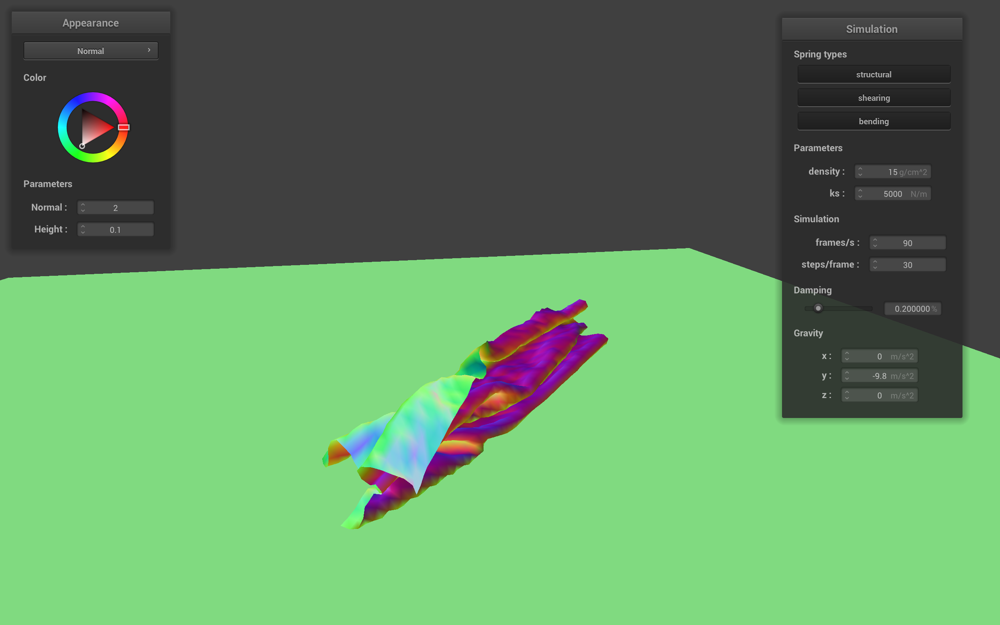
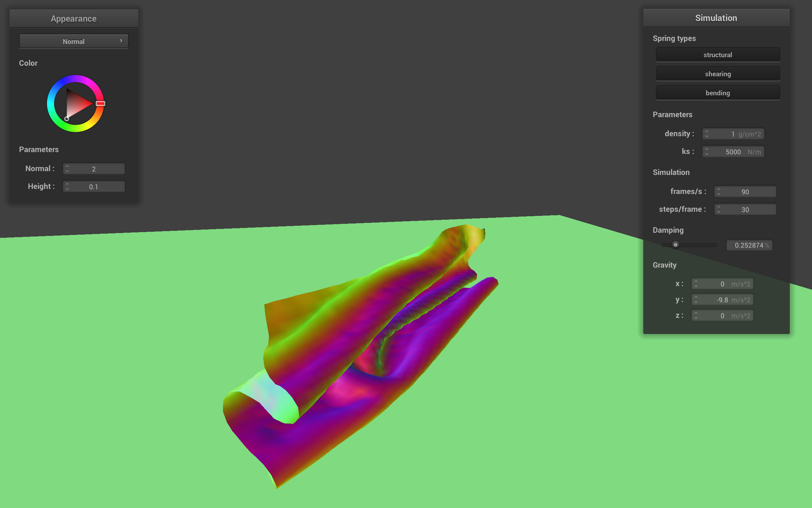

Link to webpage: webpage
Link to GitHub repository: repo
Overview
This homework felt like a culmination of past homeworks. With our knowledge of implemeting object rendering and light affects we were able to build upon them to now add collision physics to bring motion to life. This homework was very math heavy as each implementation relied on object poition, friction potential, velocity and spatial mapping to dictate what happens to the objects according to the current state it is in.
With basic building blocks of masses and springs, we were able to simulate cloth, which may not seem that cool, but let me tell you constant pressing 'R' then 'P' and sometimes even 'N' sure gave me a rush. Also learning more about realistic lighting techniques and textures/shaders to give more artistic freedom to the scene was cool. Mirror was probably my favorite affect.
Part 1: Masses and springs
scene/pinned2.json all constraints
scene/pinned2.json all constraints
no shearing
only shearing
Part 2: Simulation via numerical integration
scene/pinned4.json final resting stage, default params
cool ripple at higher density
more sag at lower ks
less sag at higher ks.
low damping very chaotic
ks: higher spring constant doesnt allow the cloth to drape too far down when falling. It appears more stiff and bounces less. lower spring constant has the cloth sagging more in the center. The falling motion seems smoother and it has more bounce from start to rest. the sag is more noticable at lower densities.
damping: higher damping makes the cloth fall at a slower state, but it is very controlled and doesn't bounce, getting to rest pretty immediate. Lower damping is more chaotic, takes longer to get to the rest state since its bouncing a lot.
dansity: at higher densities, the cloth bounce is more apparant in the center, it looks like it causes a ripple and the center of the cloth kinda bounces up like how a drop of water hits a pool of water would look like. At lower density, cloth is a bit stiffer in the bounces.
Part 3: Handling collisions with other objects
ks:5000
ks:500
ks:50000
resting on plane
For the implementaiton, I basically followed the exact step by step process as explain in the spec. In Sphere::Collide I computed the direction from sphere center to point mass and the magnitude of that direction vector, then checked if the point mass was "inside" the sphere. If it is then I got the tangent point Vector3D tp = origin + (radius * dir.unit());
computed the correction vector Vector3D correction = tp - pm.last_position; and applied friction to its new position pm.position = pm.last_position + correction * (1.0 - friction);.
Likewise for planes, I implemented Plane::Collide by checking if the point mass would "cross over", and if it does I computed the tangent point using linear interpolation, got the correction vector with the SURFACE_OFFSET and updated the position with apllied friction.
Part 4: Handling self-collisions
default param

default param
default param
low ks

low density
high density
To handle self-collisions, I implemented spatial hashing to grab nearby point masses. The 3D space is
divided into grid cells, and each point mass is assigned to a cell using a hash function based on its position. For each point mass, I check others
in the same cell and apply a repulsive correction if they are closer than 2x the cloths thickness. The correction is
averaged and scaled by the number of simulation steps. I added this logic to the
simulation loop before handling external collisions, preventing the cloth from clipping through itself. When implementing this, at higher densities, the cloth was clipping
through the plane, Im thinking with the given framerate, the density was so high it was slipping through at a faster rate than the frame rate was able to calculate its position, so I had to go back to my Plane::Collide method and add a check
to see if the point was under the plane and pushed it up to the surface. At lower denisitys the cloth was more airy and the folds look wider. at lower ks, the cloth was more chaotic and jumpy when getting to resting poition. At
higher densities, the cloth falls faster and harder and the fold look flatter.
Part 5: Shaders
Shader programs control how an object is rendered. Vertex shaders controls the shape of the object and where its vertexes should appear on the screen. Fragment shaders decide what each pixel of the shape should look like.
Blinn-Phong shading helps rendred models look more realistic by factoring lighitng interactions witht the surface. It combines ambient lighting, spectral lighitng and diffuse lighting and layers them to according to where the light is, where the viewer is, and how shiny the surface is to bring the object to life.
ambient
diffuse
specular
phong
custom texture
custom texture
bump param from spec
bump param from spec
displacement default param
displacement default param
displacement param from spec
Bump and Displacement help add surface detail to objects. Bumping doesnt actually chage the objects shape, but rather plays with the lighitng to appear that the surface is being raised. Displacement actually does change the geometry of the object based of the height data. this is apparent in the sumulations run. Looking at the bump simulations, both the cloth and sphere appear smoothe, but the image is apparent due to the lighting cast on it. Displacement is clearly distorting both the cloth and sphere and the image doesnt look proper until the hieght and normal parameters are throughly tuned to resemble the true image such as how it appears on bump.
I used the -o 16 -a 16 and -o 124 -a 124 flags to chanegt he sphere coarsness, but im going to be completeley honest ans say i really didnt notice anything. like anything. I used the default texture, custome tetxure and texture 4, but default param, 16, and 124 flags all looked identical to me. I'm not sure what exactly we were looking for, but intial state, resting state and cloth/sphere behavior were constant through all.
anyways, this is mirror